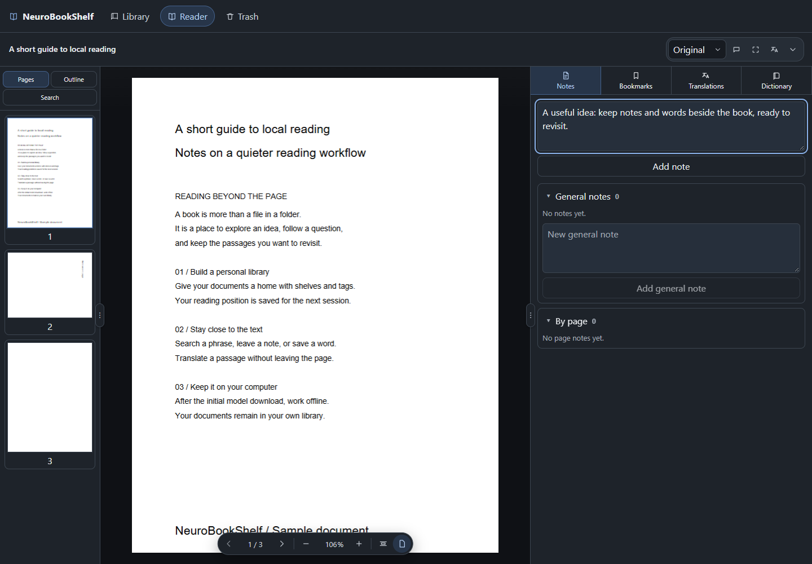

A place on your shelf
Import PDFs and organize them with shelves and tags. The reader remembers your page and zoom.
A PDF library for books, papers and ideas worth returning to. Reading, notes, OCR and translation — on your computer.
Windows x64 · macOS Apple Silicon

Keep your library and work with text in one place. Built for PDFs, with no account required.
Import PDFs and organize them with shelves and tags. The reader remembers your page and zoom.
Select a region or translate pages in a background queue. The stable release supports English → Russian.
Add notes and bookmarks. Collect words in a book dictionary or your global dictionary.
Python and required libraries are included. You do not need to install a development environment.
Get the stable release from GitHub Releases. File checksums are available on the same page.
Early release: Windows builds currently have no publisher certificate; macOS builds are not notarized. Your system may warn on first launch. Installation instructions.
Reading, OCR and translation run locally. Model installation downloads model files; your PDFs are not uploaded for cloud processing.
Stable version 0.1.0 supports English → Russian translation and English OCR. The next version is being prepared with English ↔ Russian, French ↔ English, download cancellation and a Russian/English interface. These features are not yet in the published installer.
Only PDF is supported. Complex layouts, tables and low quality scans can produce inaccurate OCR and translations. EPUB and ready to use Linux packages are not supported yet.
Open a feature request or question in GitHub Issues. A GitHub account is required. Please check existing discussions before submitting a new idea.